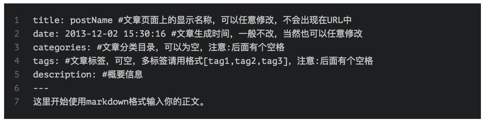

Tips-Hexo
可以尝试将 source/css/_common/scaffolding/tables.styl 中的 table-layout: fixed;
改为 table-layout: auto;
<br> 表格内换行
Markdown 表格样式调整与自适应优化 | MOxFIVE's Blog
在html前加入，即可不编译
---
layout: false
---
关于引用站内文章的链接，可以使用以下语法：
{% post_link markdown-learning-by-maxiang 点击这里查看这篇文章 %}
ps：这个功能跟主题无关。
type: "picture"
---
{% gp 4-3 %}

{% endgp %}
Markdown 图片居中
blog about the config of my laptop, assume I bought a new macbook

草稿
草稿相当于很多博客都有的“私密文章”功能。使用如下命令创建：
$ hexo new draft "new draft"
会在source/_drafts目录下生成一个new-draft.md文件。但是这个文件不被显示在页面上，链接也访问不到。也就是说如果你想把某一篇文章移除显示，又不舍得删除，可以把它移动到_drafts目录之中。
如果你希望强行预览草稿，更改配置文件（_config.yml）：
$ render_drafts: true
或者如下方式启动server：
$ hexo server --drafts
下面这条命令可以把草稿变成文章，或者页面：
$ hexo publish draft "draft name"